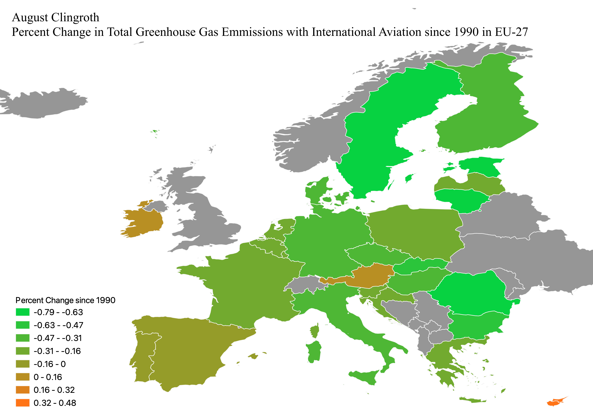

August Clingroth
GEOG 370 Homework 7
This is a choropleth displaying the percent change of total net greenhouse gas emissions in eu-27 since 1990. It is important to note that international aviation is included in the calculation of net emissions. I chose this because the EU has a goal to reach complete net-zero emissions by 2050, and to reach at least a 55% reduction from 1990 levels by 2030. This can help visualize each countries progress towards these goals. Only Cyprus, Austria, and Ireland have had an increase in their total net greenhouse gas emissions since 1990.

Link to Geojson in Github repository
Link to visible Geojson
Link to csv (downloads)
Link to source of CSV data